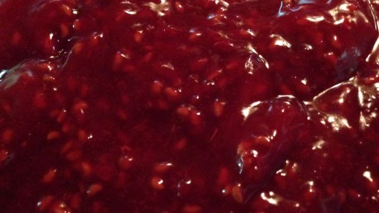

Raspberry Filling

Description
Simple raspberry filling for use with chocolate cake or any other recipe.
Ingredients
- 4 packages (6 ounces each) fresh raspberries
- 0.75 cup plus 2 tablespoons sugar
- Pinch of coarse salt
- 2 teaspoons fresh lemon juice
Directions
- While cakes are baking, stir together 3 cups raspberries, sugar, salt, and lemon juice in a medium saucepan. Cook over high, stirring frequently and mashing with the back of a spoon, until mixture comes to a boil, 2 minutes. Continue to cook, stirring, until mixture thickens and clings to spoon, 7 to 8 minutes more. (You should have 1 1/3 cups.)
- Let cool 30 minutes. Stir in 2 cups raspberries, reserving remainder.
- Spread half of filling over one cake. Top with second layer; spread remaining filling over top. Top with final layer, cut-side down. Refrigerate, covered, at least 1 hour and up to overnight. Spread frosting over top and sides of cake. Garnish with remaining raspberries.
Notes
This recipe often makes more filling than is needed, it can be refrigerated or frozen for later. Used with chocolate cake.